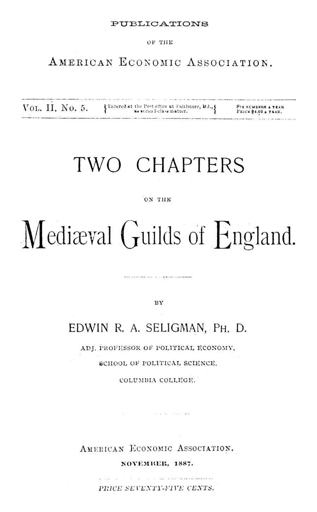

Guildas medievais: da confraria ao monopólio, e do monopólio ao nome
Leitura: 7 min
Seligman desmonta o mito das guildas fraternas: a guilda mercantil vendia monopólio e isenção de tributos; a de ofício servia à polícia de mercado da cidade. E ambas acabaram em ritual vazio.


Em Cambridge, no século XI, uma confraria de thanes escreveu em estatuto uma regra de seguro. Quem matasse um irmão da guilda pagaria oito libras à sociedade; se não pagasse, a guilda inteira assumiria a vingança. Se o homicida fosse o próprio membro, a confraria respondia com ele — salvo se tivesse agido por insensatez ou dolo, caso em que pagava sozinho.
É com cenas assim que Edwin R. A. Seligman, professor adjunto de economia política no Columbia College, abre o estudo que a American Economic Association publicou em novembro de 1887. O texto nasceu como tese de doutorado, escrita em 1882-3. Sua primeira afirmação já contraria o senso comum: as guildas originais não tinham nenhuma relação com comércio ou indústria.
“Que todos suportem se um errar; que todos suportem igualmente.” (“Let all bear it if one misdo, let all bear alike.”)
Para que servia uma guilda antes de haver mercado?
Seligman identifica três tipos de guilda anglo-saxã: religiosas, sociais e de proteção. A própria palavra denunciava a função: guild designava, na origem, um pagamento em comum. Nos estatutos de Abbotsbury, Exeter e Cambridge, os membros davam dinheiro ou cera para as velas do culto, cuidavam de doentes e mortos e mantinham até um fundo de seguro contra incêndio.
O caso mais nítido é a frith-guild de Londres, cujos estatutos, do reinado de Æthelstan, estão na Judicia Civitatis Londoniae. Eram associações de cem homens, subdivididas em grupos de dez. Cada membro dava um xelim para custear a caça aos ladrões, e as perdas eram indenizadas. O autor supõe que bispos e reeves a autorizaram por não conseguirem, eles próprios, fazer cumprir a lei. Polícia privada, com missa pelos mortos. A guilda nunca mais é mencionada; provavelmente definhou à medida que a segurança aumentou.
O que a guilda mercantil vendia aos seus membros?
A guilda mercantil é outra criatura, de outra origem. Surge por volta da Conquista normanda; a primeira menção está no Domesday, em Nottingham. Logo quase não havia burgo importante sem a sua. Seligman cita a lista de Gross, com mais de noventa cidades. A exceção notável era Londres.
O primeiro privilégio era o monopólio do comércio interno: quem não fosse membro não podia comerciar na cidade nem nos subúrbios. Escapavam os gêneros alimentícios, e as restrições se afrouxavam em dia de mercado e em tempo de feira. O segundo era a isenção dos pequenos tributos que oneravam cada passo do comerciante.
Seligman recusa a imagem romântica. Os dispositivos de caridade e os banquetes eram insignificantes diante do corpo de regras puramente mercantis. Sociedades com não-membros eram punidas com severidade, e os irmãos não podiam guardar mercadorias alheias nem por pouco tempo.
“Um exclusivismo egoísta e o desejo de impor seus privilégios de classe.” (“A selfish exclusiveness and a desire to enforce their class privileges.”)
Quem governava a cidade: a guilda ou o burgo?
Contra Brentano, cuja tese dominava, Seligman sustenta que burguês e membro da guilda eram figuras distintas. Mulheres eram admitidas como membros plenos, embora não pudessem ser burguesas; monges e prelados também; forasteiros, idem. Em Ipswich, logo após a carta do rei João, os estatutos da guilda foram para um rolo separado do da cidade.
O declínio, concluído nos séculos XIV e XV, fundiu a guilda com a corporação municipal. Em Leicester, em 1572, a expressão guild-merchant foi trocada por freemen. Em Preston, de vinte em vinte anos, a cidade parava uma semana para realizar a guilda e admitir novos cidadãos com um juramento que já não significava nada. Em 1705, o prefeito de Winchester processou um certo Wilkes por exercer ofício sem ser livre da guilda mercantil. Os juízes admitiram que ninguém sabia o que o termo queria dizer ali. A instituição virara palavra.
Por que proibir o trabalho à luz de vela?
As guildas de ofício aparecem no início do século XII; os tecelões de Londres já estavam organizados sob Henrique I. No reinado de Henrique II, quinze guildas foram multadas como adulterinas, criadas sem licença real — entre elas, ourives, açougueiros e pimenteiros. O núcleo era o mesmo: ninguém exercia o ofício sem ser membro. Mas, de início, qualquer cidadão podia entrar.
A razão de ser aparece num episódio londrino. Oleiros se queixaram ao prefeito de quem comprava panelas de metal ruim e as levava ao fogo para parecerem de latão velho; sob calor forte, elas derretiam. O prefeito proibiu a prática, quatro guardiões foram escolhidos para fiscalizá-la, e a organização estava completa.
Daí a proibição do trabalho noturno, que Brentano atribuía ao bem-estar dos artesãos. Os estatutos dizem outra coisa. Os luveiros vetavam a venda à noite porque à luz de vela não se distingue couro bom de ruim. A separação de ofícios seguia a mesma lógica: quem mexesse com sapato velho não podia misturá-lo ao novo.
“Nenhum homem consegue trabalhar tão bem de noite quanto de dia.” (“No man can work so neatly by night as by day.”)
O aprendizado também vinha da lei geral, não da guilda. Seligman liga os sete anos à regra de Alfredo, que libertava escravos no sétimo ano de servidão. E tudo se inscrevia na doutrina do preço costumeiro, não competitivo. Os três grandes delitos de mercado eram o regrating, o forestalling e o engrossing. Um estatuto de Eduardo III fazia derivar deste último a palavra grocer.
O Estatuto dos Trabalhadores, aprovado logo após a peste de 1348-9, tomou como padrão os salários de 1346. Seligman nega que fosse simples opressão, porque também regulava preços. Mas recusa a leitura oposta: os legisladores, sob frases bem-soantes, perseguiam os interesses de sua própria classe.
O fecho é otimista. Na guilda, o mestre trabalhava ao lado dos ajudantes, e todo trabalhador era, ou podia vir a ser, seu próprio patrão; recebia salário e lucro. Para Seligman, as guildas realizaram em parte o horizonte da cooperação produtiva — embora seu renascimento não fosse nem possível nem desejável.
Na minha leitura
Na minha leitura, o ensaio vale menos pela erudição do que pelo método: Seligman lê as guildas pelos estatutos, não pelos sentimentos que elas declaravam. A mesma regra que protegia o comprador da panela falsa fechava o mercado ao forasteiro. Qualidade e reserva de mercado andavam juntas, e o documento não permite separá-las com facilidade. Esse é o dilema permanente de toda regulação profissional.
Também me parece instrutivo o destino da guilda mercantil. Um privilégio criado para fins econômicos sobreviveu séculos à sua função, até que juízes não soubessem mais explicá-lo. Instituições raramente morrem quando perdem a razão de existir; tornam-se ritual. Avaliá-las periodicamente pelo que fazem, e não pelo nome que carregam, é uma lição de 1887 que continua atual.
Glossário
- Wergild
- Valor pago pela morte de um homem no direito anglo-saxão, dividido entre parentes e, por vezes, a guilda.
- Guilda mercantil (guild-merchant)
- Associação de comerciantes de um burgo com monopólio do comércio interno e isenção de tributos.
- Forestalling
- Interceptar mercadorias a caminho do mercado para comprá-las mais barato.
- Regrating
- Comprar para revender a preço mais alto.
- Engrossing
- Reter mercadorias compradas no atacado para negociar depois em condições mais vantajosas.
Fontes
- Two Chapters on the Mediaeval Guilds of England (pp. 9–113). JSTOR · Internet Archive (PDF)
- Sumário da edição no JSTOR: Publications of the American Economic Association, vol. 2, nº 5.
Documento em domínio público (EUA, publicado antes de 1931), via JSTOR Early Journal Content e Internet Archive. Resumo e comentário do autor deste site, sem afiliação com a American Economic Association. Encontrou um erro? Escreva: a correção é publicada no próprio texto, com data.
← Nº 9 · Lã, guildas e teares a menos: como nasceu a riqueza inglesa Nº 11 · Água, gás, luz e bonde: quem deve servir a cidade? →